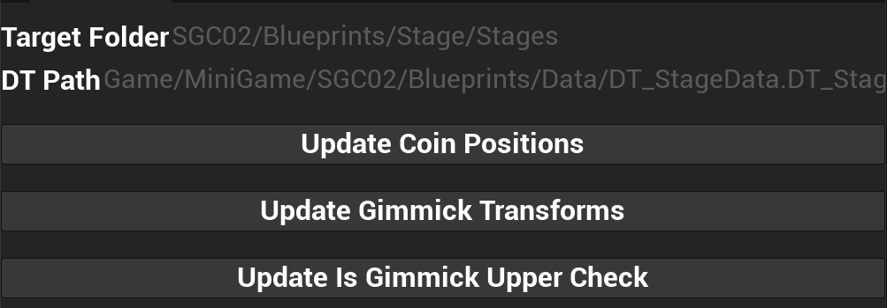
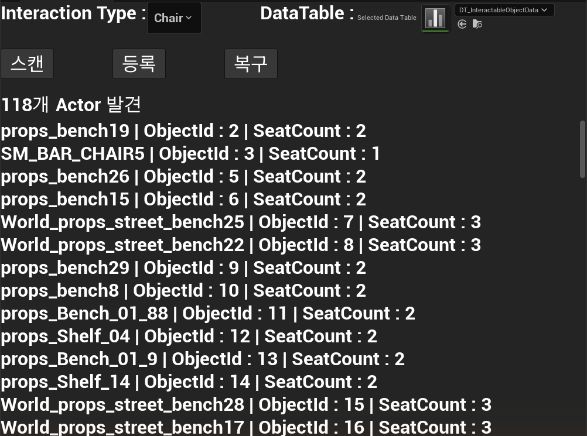

UE 5.6 라이브 서비스 메타버스 Synthoria에서 미니게임·외부 지갑 연동·상점 기능을 개발하고, 상호작용·상점 시스템의 레거시 구조를 개선했습니다.
같은 회사 신규 프로젝트 아산모아 메타버스에서 라이브 코드베이스를 포크하는 마이그레이션을 클라이언트 단독으로 리드하고, 웹 로그인 전환·신규 백엔드 이관·서버 권위형 퀘스트 전환·자동화 테스트 도입·Android/iOS/Windows 빌드와 콘텐츠 CDN 배포 파이프라인까지 담당하고 있습니다.
Unity 기반 교육용 미니게임 모음집 RollingSeed에서 기획서 없이 레거시를 직접 플레이·분석해 미니게임 6종을 리마스터 프레임워크로 이식했습니다.
Unreal Insights로 병목을 계측해 원인을 좁히고, 소프트 레퍼런스와 비동기 로딩으로 게임 스레드 블로킹을 제거한 경험이 있습니다.
Editor Utility Widget·Python(Unreal), EditorWindow(Unity), Commandlet으로 반복 작업을 도구화해 왔습니다.
01 · 주식회사 셔블
Synthoria 라이브 서비스 메타버스 플랫폼
기간
2025.12 ~ 2026.06
역할
게임 클라이언트 프로그래머 (정직원)
기술
UE 5.6 (커스텀 빌드) · C++ · Blueprint
라이브 서비스 대상 변경은 모두 feature 브랜치에서 진행하고, 영향 범위·테스트 포인트를 문서화한 뒤 반영했습니다.
미니골프 미니게임 리팩토링 및 완성
외주 인수작을 설계 문서 없이 2주 만에 리팩토링·재구현·자동화까지 1인으로 완결했습니다.
2026.01.21 ~ 02.03
1인 단독
C++
Blueprint
Python
Enhanced Input
Editor Utility Widget
DataTable
배경
외주로 제작이 끝난 상태로 인계받았으나, 외주사가 Unity 기반 개발사라 스테이지 오브젝트를 동적 생성 대신 Actor Component로 일일이 고정 배치하는 등 Unity 스타일 구조가 그대로 이식돼 있었습니다.
설계 문서가 없어 코드와 실제 인게임 플레이만으로 구조와 동작 규칙을 파악했습니다.
리팩토링 및 재구현
Stage Blueprint에 Child Actor Component로 고정돼 있던 오브젝트 배치를 DataTable 기반 스폰 구조로 전환하고, 하드코딩된 좌표·회전값과 타입 오류를 정리했습니다.
GameMode 상태 흐름 재설계, 물리 기반 조작, UI, 18개 스테이지 정리까지 단독 수행했습니다.
스테이지 데이터 파이프라인 — 신규 스테이지는 Blueprint 수정 없이 CSV 행 추가로 끝나도록 바꿨습니다.
드래그로 조준해 파워를 정하고 샷 — 공이 코스를 따라 굴러감퍼팅 → 골인 → Par 연출과 점수 반영

오브젝트 위치 EUW — 스테이지 BP의 코인 위치·기믹 Transform·상단 판정을 DataTable에 일괄 반영
CSV Reimport 기반 DataTable 갱신 흐름을 만들어 18개 스테이지의 반복 수동 작업을 줄였습니다.
모바일 UX
Enhanced Input 기반 3축 제어(회전 / 각도 / 파워)를 구현했습니다.
AddImpulse 기반 물리 샷과 궤적 시각화(Prediction Line)를 구현했습니다.
아키텍처
StageData(스테이지 메타), ScoreParData(스코어 기준), ResultWordData(결과 문구) 등 Data-Driven으로 설계했습니다.
TWeakObjectPtr + Delegate Unbind 패턴으로 메모리 안전성을 확보하고 ensure 경고를 제거했습니다.
콘텐츠
Fade, 카메라 연출, 사운드, GoalZone/FailZone 배치 등 폴리싱까지 수행했습니다.
외부 블록체인 지갑 연동 구현 후 제거됨
외부 지갑 플러그인을 사내 엔진에 포팅하고 PC·모바일 이중 연결 구조로 구현했으나, 서비스 방침이 웹 기반으로 바뀌며 네이티브 구현은 제거됐습니다.
2026.03.09 ~ 04.03
기술 검토 · 설계 · 구현
C++
GameInstanceSubsystem
REST
WalletConnect
내장 SDK가 외부 지갑 연동을 지원하지 않아 연동 방식 3가지를 비교한 뒤 WalletConnect 기반 외부 플러그인 도입을 결정했습니다.
UE 5.5용 플러그인을 사내 5.6 엔진에서 빌드되도록 포팅하고, Mac 제외·iOS 임시 비활성화 등 플랫폼별로 빌드를 격리했습니다.
플러그인이 제공하는 Actor를 GameInstanceSubsystem이 소유하도록 감싸 수명과 UI 결합을 분리하고, PC는 QR 코드, 모바일은 딥링크로 연결되게 했습니다.
연결 결과를 기존 인증 REST API로 등록하고, 자산 등급 조회와 연동 팝업 UI까지 구현했습니다.
PC(QR)·모바일(딥링크) 이중 연결 흐름. 플러그인 수명은 Subsystem이 관리하고 UI와는 델리게이트로만 연결했습니다.
상호작용 시스템 범용화 리팩토링
의자 이름 문자열로 식별하고 의자 Actor 하나가 모든 처리를 맡던 라이브 구조를, Actor 단위 정수 ObjectId 기반 범용 구조로 설계·전환했습니다.
2026.03 ~ 04
분석 · 설계 · C++ 리팩토링 · 에디터 도구 · 서버 협의
UWorldSubsystem
DataTable + CSV
Editor Utility Widget
문제
라이브 구조는 의자 Actor 하나가 클릭·패킷·위젯·좌석을 모두 처리하고, 서버에는 의자 이름 문자열을 보냈습니다. 서버가 대상을 검증할 기준이 없었고, 상호작용 타입이 늘 때마다 전용 서브시스템이 하나씩 생기는 구조였습니다.
판단
오브젝트 등록 방식을 3가지로 비교했습니다. A안(각 Action이 서버 서브시스템에 직접 등록)은 서버 서브시스템의 책임이 과중해지고, C안(Multicast 델리게이트)은 이벤트마다 전체를 순회합니다. 그래서 B안(범용 서브시스템이 ObjectId로 조회)을 택했습니다.
Before — 의자 전용 단일 상속 구조After — 범용 서브시스템 + Component·Action 계층
구현
상호작용 오브젝트 DataTable 행을 설계했습니다(ObjectId · LevelType · InteractionType · ObjectLocation · 레벨 인스턴스 여부 · WorldType · SeatCount). 이 테이블을 CSV로 추출해 클라이언트와 서버가 같은 데이터로 검증하게 했습니다.
InteractionSubsystem은 TMap<uint32, TWeakObjectPtr<UInteractionComponent>>로 ObjectId를 매핑하고, 레벨 로드 시 TActorIterator로 자동 스캔·등록합니다.
좌석 단위 점유와 가장 가까운 빈 좌석 배정을 구현하고, 상점 NPC까지 같은 구조로 확장했습니다.
의자·상점 NPC 전용 패킷을 ObjectId · 상호작용 타입 · 동작 타입 · 동작 데이터로 구성된 범용 상호작용 패킷 하나로 통합했습니다.
레벨과 레벨 인스턴스의 상호작용 Actor를 스캔해 ObjectId를 순차 부여하고 DataTable에 등록(같은 행은 갱신)하는 에디터 도구를 만들었습니다. C++ 지원 함수 10종과 EUW로 구성했고, 기존 의자 ID 전용 도구 4종은 정리했습니다.
패킷 변경 사항과 서버 계획서, 흐름 비교 문서를 작성해 서버 개발자와 에러 코드·동작 타입·브로드캐스트 범위를 협의했습니다.
벤치 앞 앉기 버튼 → 앉기 → 일어서기 버튼 → 일어나 이동

상호작용 등록 EUW — 의자 타입을 스캔해 메인 월드에서 118개 Actor를 찾고 ObjectId·좌석 수를 표시
하나의 데이터를 클라이언트와 서버가 공유하는 구조
단계
요청 패킷의 대상 식별
의미
라이브 기존
의자 이름 문자열
서버가 대상을 검증할 수 없음
ObjectId 전환
정수 ObjectId + 동작 타입
Actor 단위 식별
좌석 단위 점유
ObjectId + 좌석 번호 + 동작 타입
다인 좌석 지원
범용 통합
ObjectId + 상호작용 타입 + 동작 타입 + 동작 데이터
의자·상점 NPC 등 공용
상점 시스템 게임서버 전환 및 프레임드랍 최적화
상점 통신을 REST에서 게임서버 TCP 패킷으로 전환하고, 전환 후 발견한 약 540ms 프레임 스파이크를 Unreal Insights로 추적해 비동기 프리로딩으로 해소했습니다.
2026.04
프로토콜 재설계 · 패킷 파싱 · 트러블슈팅 · 프로파일링
TCP 바이너리 프로토콜
Unreal Insights
StreamableManager
TSoftClassPtr
REST → 게임서버 TCP 패킷 전환
상호작용 리팩토링을 마친 뒤 상점만 HTTP REST로 남아 있던 것을 정리 대상으로 제안하고, 범용 상호작용 패킷과 상점 아이템 목록 패킷으로 전환했습니다.
아이템 최대치를 4,680개로 산정해 고정 크기 배열(50슬롯)을 나눠 받는 안을 탈락시키고, 길이 헤더 기반 가변 길이 단일 패킷으로 서버 개발자와 사양을 확정했습니다. 수신 측은 Flexible Array로 파싱하고, 헤더의 패킷 크기와 2 + 아이템 수 × 항목 크기가 일치하는지 검증합니다.
패킷 도착 순서가 바뀌어도 열리도록 상점 오픈 조건을 양쪽에서 검사하게 했습니다.
상점 UI가 뜨지 않던 문제 3건을 순서대로 해결했습니다.
위젯 생성 전 데이터 주입 → 받은 데이터를 보관했다가 생성 시 빌드하는 Pending 패턴
Blueprint가 델리게이트를 바인딩하기 전 Broadcast → 다음 틱으로 지연
BlueprintImplementableEvent 시그니처 변경으로 무효화된 Blueprint 이벤트 → C++ 경로로 이관
구매 성공 델리게이트를 통화 갱신에서 분리해, 퀘스트 보상 등 상점 밖의 잔액 변동과 섞이지 않게 했습니다.
상점 아이템 목록 패킷 구조 비교
Unreal Insights 기반 프레임드랍 최적화
문제
상점을 처음 열 때 약 540ms 프레임 스파이크(1.9fps)가 발생했습니다. Insights 기준 해당 프레임 541ms 중 동기 에셋 로딩이 540ms였습니다.
원인 (2계층)
① 아이템 정의 조회가 메모리에 없는 Definition Blueprint를 게임 스레드에서 동기 로딩했습니다. ② 탈것 Definition이 스폰 Actor 클래스를 TSubclassOf<AActor> 하드 레퍼런스로 들고 있어 탈것 Blueprint·메시·머티리얼까지 연쇄 로딩됐습니다.
Before — 동기 로딩으로 게임 스레드 블로킹After — 2단계 비동기 프리로딩과 콜백 체인
1차썸네일만 비동기 프리로딩 → 효과 미미. 병목이 텍스처가 아니라 Definition임을 확인
2차프리로딩 완료를 기다린 뒤 UI 오픈 → 부분 개선. Insights로 진짜 병목(Definition 동기 로딩) 확정
클라이언트가 판정하던 퀘스트를 서버 권위형 조회 구조로 바꾸면서, 검토 중 발견한 non-blocking 소켓 부분 수신 결함을 함께 고쳤습니다.
2026.09 ~ 10
2단계 전환
TCP 수신 계층
회귀 테스트
문제
수신 워커가 non-blocking 소켓에서 "아직 데이터 없음"과 "연결 종료"를 구분하지 않아, 큰 패킷이 나뉘어 도착하면 스트림이 어긋날 수 있었습니다. 새 퀘스트 응답이 당시 가장 큰 패킷이라 실제로 이 결함을 건드릴 수 있었습니다.
판단
기존 흐름을 건드리지 않고 새 송수신·데이터 모델만 먼저 추가하고(서버의 열 단위 데이터를 행 단위 모델로 변환), 실서버 왕복을 확인한 뒤 구 로직을 제거하는 2단계로 진행했습니다. 신·구 동시 운영 상태에서 UI부터 바꾸는 안은 완료·보상이 이중으로 처리될 수 있어 버렸습니다.
1단계에서 실서버 왕복으로 퀘스트 19건과 필드 순서가 일치하는 것을 확인했습니다.
2단계에서 구 퀘스트 로직을 제거하고 일일·업적 UI를 새 모델로 전환한 뒤, 디자인 시안 기준 UI를 반영했습니다.
수신부는 데이터가 아직 없으면 읽기 가능 상태를 기다렸다 재시도하고, 프레임 하나를 조립하는 전체 과정에 단일 시간 제한을 둬 초과하면 부분 프레임을 재사용하지 않고 연결을 끊게 했습니다.
퀘스트 파싱·수신부·에셋·디자인 회귀 테스트를 추가했습니다.
2단계 전환수정한 수신 흐름
자동화 테스트 도입과 에디터 도구
자동화 테스트가 하나도 없던 승계 코드베이스에 UE Automation 테스트를 도입하고, 반복 작업을 Commandlet과 에디터 유틸로 만들었습니다.
2026.09 ~
UE Automation Test
Commandlet
Editor Utility
0 → 53테스트 정의 (원본 코드베이스 0개)
23테스트 소스 파일
패킷 파싱, REST API 계약, 에셋 무결성, 입력 회귀 등을 검사하는 테스트를 기능마다 함께 작성했습니다.
상호작용 오브젝트 ID 등록 도구는 기존 양수 ID는 유지하고 0인 것만 새로 발급합니다. DataTable과 로드된 Actor 전체에서 중복을 검사하고 레벨 경로를 정확히 대조하며, 오류가 하나라도 있으면 아무것도 바꾸지 않습니다.
관광 지도·상호작용 연결·UI 작성 등 반복 작업을 Commandlet으로 만들고, 에디터에서만 쓰는 디버깅 타임아웃은 패키지 기본값과 분리했습니다.
반복 Blueprint 작업은 스크립트로 처리하는 에디터 전용 헬퍼(BP 그래프 노드 생성·연결·컴파일 로그 반환, 위젯 BP에 위젯 추가)를 만들고, ID 등록 도구에 초기화 기능을 추가했습니다.
상호작용 ID 등록 도구 — 전부 성공하거나 아무것도 바꾸지 않음
빌드/배포 자동화와 콘텐츠 청크 CDN 배포
Android 원클릭 빌드를 Jenkins에 연결하고 iOS TestFlight·Windows 패키징 파이프라인까지 구축했습니다. 버전 역전을 막는 versionCode 정책을 세우고, 앱 업데이트 없이 콘텐츠만 교체하는 3플랫폼 콘텐츠 청크 CDN 배포 파이프라인을 만들었습니다.
2026.06 ~
Jenkins
Android · iOS · Windows
semver
콘텐츠 청크 · CDN
최신 코드 fast-forward pull → semver 기반 versionCode 자동 계산 → 패키징 → 스토어 내부 테스트 자동 업로드로 이어지는 Android 빌드 래퍼를 만들어 Jenkins에 연결했습니다. Windows 배치 파서 결함(괄호 이스케이프·코드페이지)도 수정했습니다.
iOS는 배포 서명 팀을 전환하고 TestFlight 컴파일·서명 실패를 해결해 Jenkins job으로 TestFlight 배포까지 진행했습니다.
Windows 패키징도 별도 Jenkins 파이프라인으로 운용하고, 청크 패키지와 CDN 다운로드를 검증해 모바일 이관 절차를 문서화했습니다.
원본은 플랫폼별로 versionCode를 따로 관리해 특정 조건에서 자릿수가 넘쳐 스토어 업로드가 거부될 수 있었습니다. 그래서 하나의 semver에서 항상 단조증가하는 값을 뽑는 고정 자릿수 인코딩을 설계하고, 계산 지점을 빌드 래퍼 하나로 일원화했습니다.
서버 대상(Dev/Live)에 따라 패키지명이 자동 분기되게 하고, 리브랜딩에 맞춰 패키징 스크립트 12개 파일의 프로젝트명 치환을 일괄 적용했습니다.
Android 원클릭 빌드 파이프라인
versionCode 고정 자릿수 인코딩
MAJOR × 1,000,000 + MINOR × 10,000 + PATCH × 100 + 빌드 번호
1.0.1 · 빌드 4
1,000,104
1.0.10 · 빌드 1
1,001,001
1.1.0 · 빌드 1
1,010,001
자릿수를 고정해 1.0.10 < 1.1.0 순서가 항상 유지됩니다.
콘텐츠 청크 CDN 배포
앱과 기본 청크를 같은 cook으로 만드는 패키지 빌드, 기존 앱 위에 콘텐츠만 바꾸는 패치 빌드, 3플랫폼 게시 후 콘텐츠 버전을 전환하는 릴리스 단계로 나눴습니다.
콘텐츠 버전은 CDN이 현재 내보낸 번호 + 1로 자동 계산해 3플랫폼이 같은 번호를 쓰게 했습니다. 이미 게시된 번호면 빌드 시작 전에 실패하고, 업로드 직전에 한 번 더 확인합니다.
패치 빌드는 코드·설정 변경처럼 앱 재빌드가 필요한 변경을 미리 거부합니다. Windows 배포 zip은 CDN 청크와 같은 cook에서 추출해 짝이 어긋나지 않게 했습니다.
문자열 테이블 수정이 콘텐츠 업데이트로 나가지 않던 원인을 역참조 추적으로 찾았습니다. config의 하드 클래스 참조가 위젯과 문자열 테이블을 부팅 청크로 끌고 가고 있어 소프트 참조로 바꿨습니다.
3플랫폼 패키지 빌드 → 서버 자동 게시 → 콘텐츠 버전 전환 → Windows 배포 zip까지 한 사이클을 통과했고, 3플랫폼 콘텐츠 버전 동시 전환을 2회 수행했습니다. 콘텐츠만 바꾼 패치가 기기에 전달·적용되는 검증은 다음 단계입니다.
콘텐츠 청크 배포 — 앱 업데이트 없이 콘텐츠만 교체
크로스플랫폼 크래시 4건 트러블슈팅
원인 규명이 까다로운 크래시 4건을 근본 원인까지 추적해 해결했습니다.
2026.06 ~ 08
ndk-stack
cook · OBB
Shipping / Development 구성
cook 데드락
빌드머신에서도 재현되는 cook 중단을 설정 토글로 격리해 분산 셰이더 컴파일 플러그인의 데드락으로 특정하고, 플러그인을 비활성화해 패키징 블로커를 해소했습니다.
로그인 맵 SIGSEGV
청크 다운로더를 끈 설정인데도 cook이 일부 콘텐츠를 다운로드형 청크로 분리해, OBB에 부팅 맵만 들어가 로그인 맵 진입 시 크래시가 났습니다. ndk-stack 심볼 분석으로 특정하고 전 콘텐츠를 로컬 패키지에 포함했습니다.
부팅 맵 레이스
부팅 완료 신호를 동기 브로드캐스트하는 도중 BeginPlay 안에서 레벨 이동이 일어나 크래시가 났습니다. 처리를 다음 틱으로 지연해 해결했습니다.
Shipping 가드 불일치
Dev 테스트 빌드도 Shipping 구성으로 빌드돼, 출시용 가드가 로그 등 개발 기능까지 꺼서 진단이 어렵고 외부 API 실패 시 앱이 종료됐습니다. 서버 대상 매크로를 함께 보는 조건으로 바꿔 여러 커밋에 걸쳐 정리했습니다.
웹 로그인 전환 — 임베디드 웹뷰에서 OS 브라우저 + 딥링크로
엔진 내장 웹뷰가 최신 웹 로그인 페이지를 띄우지 못하고 카메라·마이크도 동작하지 않아, 웹을 OS 브라우저에서 열고 결과를 커스텀 스킴 딥링크로 받는 구조로 바꿨습니다.
2026.06 ~ 10
Android · iOS · Windows
Chrome Custom Tabs
SFSafariViewController
커스텀 스킴 딥링크
문제
엔진 내장 웹뷰(구버전 Chromium)가 웹팀의 최신 JS 번들을 파싱하지 못해 로그인 페이지가 흰 화면으로 떴습니다. 같은 웹뷰에서 카메라·마이크도 동작하지 않았습니다.
판단
엔진을 패치하는 대신 시스템 브라우저에서 웹을 열고 결과를 딥링크로 받기로 했습니다. 카메라·마이크는 엔진 웹뷰 소스까지 추적해, 웹의 미디어 권한 요청을 처리하지 않아 기본 거부된다는 원인을 확인하고 같은 OS 브라우저 방식으로 해결했습니다.
Android(intent-filter)·iOS(URL scheme)·Windows(프로토콜 등록과 실행 중인 앱으로 넘겨주는 런처) 딥링크 수신부를 만들었습니다.
로그인 시도 단위 대기 플래그로 요청하지 않은 딥링크는 거부하고, 시도 일련번호로 이전 시도의 늦은 응답을 무시했습니다. 프로필 조회로 계정 식별자를 다시 확인한 뒤 로그인을 마무리합니다.
게임서버에 연결되지 않은 상태면 로그인을 시작하지 않게 했고, Windows 프로토콜 실행이 URL 형태를 바꿔 딥링크가 버려지던 문제를 고쳤습니다. PIE에서 딥링크 콜백을 재현하는 콘솔 명령도 만들었습니다.
Android·iOS·Windows에서 웹 로그인 후 게임서버 로그인까지 확인했고, 웹 미디어는 Android 실기기에서 카메라 동작을 확인했습니다.
웹 로그인 흐름두 방식의 비교
게임 월드 진입/전환 흐름
로그인 후 월드 선택 로비를 거쳐 각 지역으로 이동하는 진입 흐름을 설계·구현하고, 모바일 사용성에 맞춰 입력 방식을 개편했습니다.
2026.08 ~ 10
C++
UMG
레벨 전환 서브시스템
레벨 타입을 데이터 테이블 키·서버 맵 타입과 일치하도록 재정의하고 상태 소유권을 정리했습니다.
게임 흐름이 바뀌어 로그인 직후 캐릭터 없는 로비를 거치게 되면서 서버 입장 요청이 빠진 것을 찾아 수정했습니다.
월드 선택 입력은 3D 건물 피킹으로 시작했지만, 모바일에서는 작은 건물을 누르기 어렵고 호버도 없어 상시 표시 이름표 버튼 + 드래그·핀치 카메라로 개편했습니다.
미니맵을 레벨별 지도와 데이터 테이블의 시작 지점 태그로 워프 핀을 자동 생성하는 구조로 바꿔 수작업 버튼을 없앴습니다(지도 좌표 변환 테스트 포함).
다층 건물 포탈에는 층 선택 팝업(C++ 위젯, 선택 상태·목적지 데이터 관리)을 추가했습니다.
월드 진입/전환 흐름
보물찾기 — 서버 상태 패킷과 Actor 등록 순서 경합 해결
기존 상호작용·우편·재화 시스템을 재사용해 보물찾기 클라이언트를 구현하고, Actor 등록보다 상태 패킷이 먼저 도착하면 상태가 사라지던 경합을 해결했습니다.
2026.08
4개 지역 × 5 지점
서버 담당자와 공동 작업
아직 등록되지 않은 ID의 마지막 상태를 보관해 두고, Actor가 늦게 등록되면 그 상태를 다시 적용하게 했습니다.
보류 상태 재적용
랭킹 — 요청 ID 없는 응답을 상태 게이트로 처리
새 TCP 랭킹 응답에는 요청 ID가 없어 늦은 응답과 중복 요청을 구분할 수 없었습니다. 지표(탭)별 대기 상태 게이트로 UI 상태가 꼬이지 않게 했습니다.
2026.10
3개 탭 · 상위 30위 · 내 순위 고정
실서버 검증
지표별 대기 상태 — 무조건 재요청하지 않음
관광 콘텐츠 — 전체 지도·관광지 상세·안내판 상호작용
아산시 전체 지도(핀·확대/축소·드래그·핀치)와 관광지 상세·방문 보상 팝업을 구현하고, 맵의 안내판 22개를 에디터 도구로 일괄 연결했습니다.
2026.09 ~ 10
UMG · RenderTransform
DataTable RowName
문제
지도에 핀이 하나도 나오지 않았습니다. 관광지 데이터 23행의 숫자 ID가 전부 0이었고, 핀 생성이 ID 0을 건너뛰고 있었습니다.
해결
관광지 전용 숫자 ID를 버리고 DataTable 행 이름을 식별자로 쓰게 했습니다. 즐겨찾기용 서버 코드와는 분리해 유지했습니다. 방문 보상은 지급 계약이 정해지지 않아 표시 전용으로 두었습니다.
기타
스마트폴 현황(Mock) — 외부 API가 아직 없어 클라이언트 Mock 데이터로 시설 현황 UI를 먼저 완성하고, 실연동 때 데이터 소스만 바꾸도록 분리했습니다.
즐겨찾기 TCP 연동 — 관광지 즐겨찾기 조회·등록·해제를 게임 서버 TCP로 연동하고 회귀 테스트를 추가했습니다(실서버 검증).
FCM 푸시 — Android 푸시 수신 플러그인과, 개발 메뉴에서 자기 기기로 보내 보는 테스트 도구를 만들었습니다. 테스트 토큰은 게임 인증 토큰과 분리했습니다. iOS는 수신 구현과 빌드 설정(푸시·서명)까지 진행했습니다.
아바타·아이템 데이터 이관 — 신규 아이템 체계로 DataTable을 옮기고 외형 성별 규약을 정리했습니다(구버전 세이브 호환 포함). 미리보기 의상 텍스처 흐림을 mip 스트리밍 문제로 규명해, 전역 설정 대신 미리보기 메시에만 적용하고 화면을 나가면 원복했습니다. → 이 경험을 바탕으로 개인 프로젝트에서 커스터마이징을 처음부터 다시 만들었습니다(AI 활용). 포트폴리오 DUCKOV LIKE · GitHub